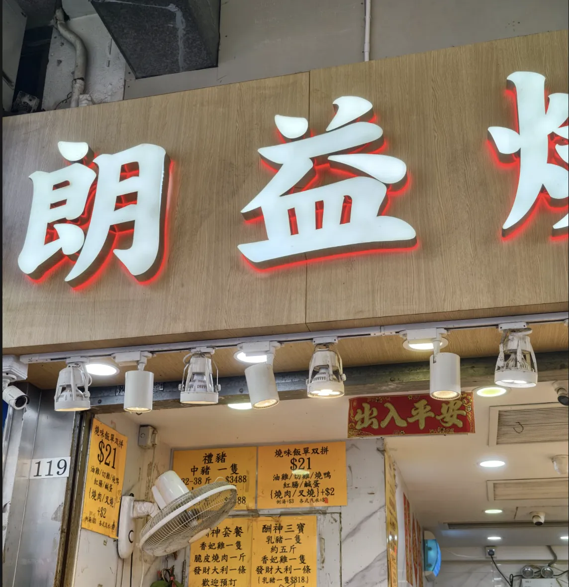
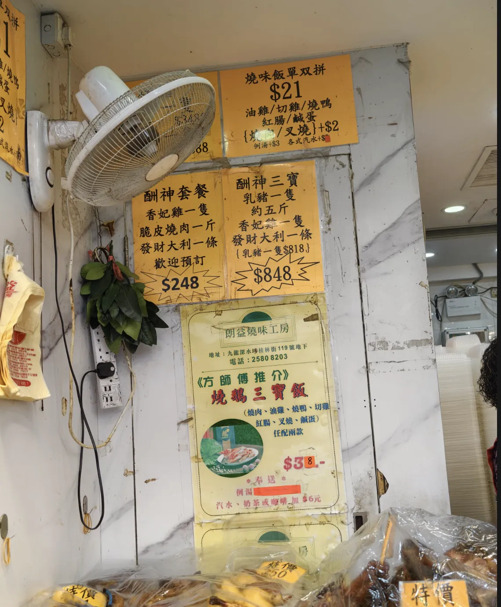
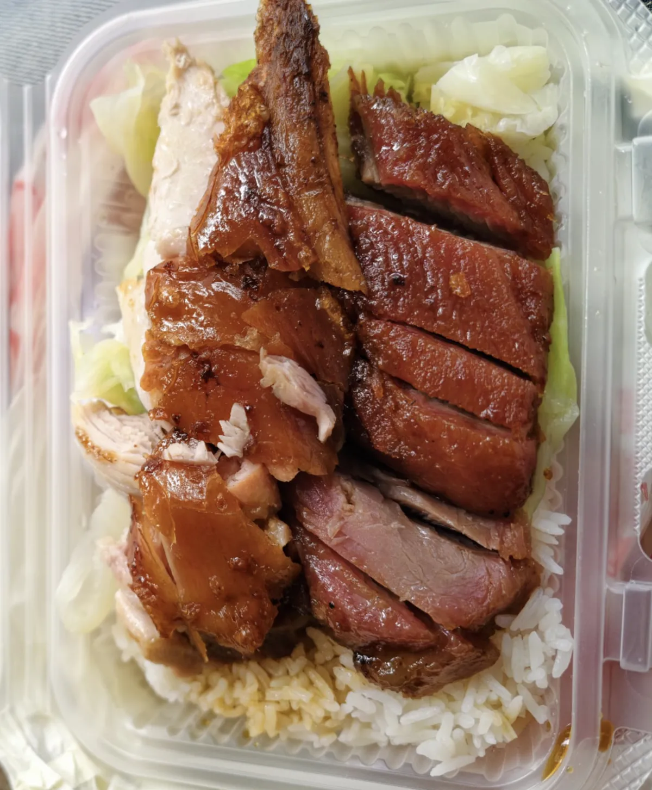
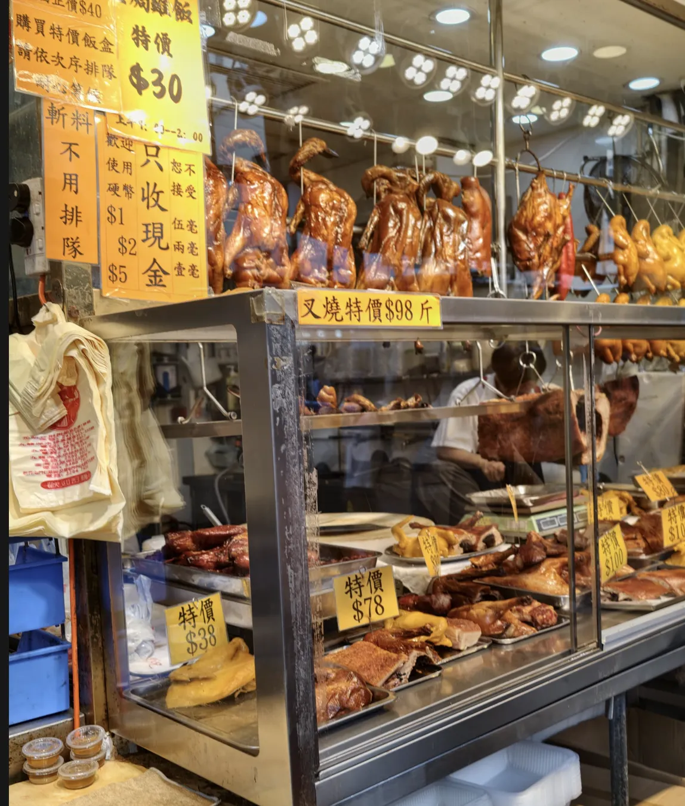
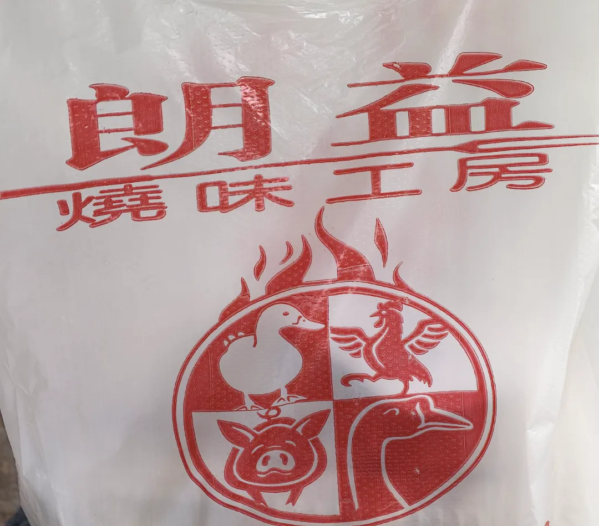

深水埗朗益燒味工房：HK$23 雙拼燒味飯
深水埗朗益燒味工房這份雙拼飯，燒肉拼叉燒。吸引的不止是價錢：飯盒有生菜，叉燒有厚度、燒肉也有份量；就我這次來說，吃完有飽足感。以下是一次到訪紀錄，價格、人流和店方資料都只代表當日，去之前以現場為準。
這篇放在本站的實食紀錄，記下的是一餐實際吃到的內容；同是香港本地到訪記錄，也可對照九龍灣千両的晚餐紀錄。本站如何分開親身觀察與店方資料，見關於本站。
當日資料
店面、餐牌和飯盒照片都是到訪時所拍。相片上看見的價目與這次實付分開記錄；餐牌和各項資料日後可能改變。
到訪與餐點
到訪日期：
點餐內容：
本次實付：
相片中的餐牌：
同區價格參照：
地址：
電話：
付款方式：
排隊情況：


飯盒實際份量
飯盒裡有白飯、生菜，以及燒肉和叉燒兩款肉。照片看得到叉燒切得有厚度，燒肉份量也不只一兩片；這次不是只靠飯量填肚。配菜有生菜，在這餐的價位裡算是實在。

就這次一餐而言，份量足、肉和菜都有，以當日付款額來說確實有「平靚正」的感覺。不過這只是單次到訪的判斷，不等於每一份、每個時段都一樣；相片也不能代替每次的實際份量。
店方介紹與到店提醒

另一個值得記下的，是店方對經營的說法：店主方先生表示不會因為價錢低就減料，也會定期聯同社福機構派飯給長者。相關供應商、每日製作與每份肉量等資料，本站未獨立核實，以下列作店方／投稿資料，不當成這次照片能直接證明的事實。
店方資料與本站判斷
店方經營資料：
本站本次判斷：

去之前留意：飯點人流較多，這次沒有記錄實際等候時間；怕排隊的話可避開高峰。付款、分店和時段價格可能不同，出發前可先致電確認，再以現場資訊為準。
常見問題
這次點了什麼？
這次點的是燒肉拼叉燒飯；配菜和飯盒內容可看上方實拍。每次份量及配菜可能不同。
餐牌價和本次實付為什麼分開記？
照片記下的是到訪時店內牌價，本次實付則來自這次點餐紀錄；兩者用途不同，不能把餐牌當成收據。之後到訪請以現場價錢為準。
店方提到的肉量和派飯資料有核實過嗎？
這些是投稿素材中的店方經營資料，本站沒有獨立訪問或核實；已和本次親身試食觀察分開標示。